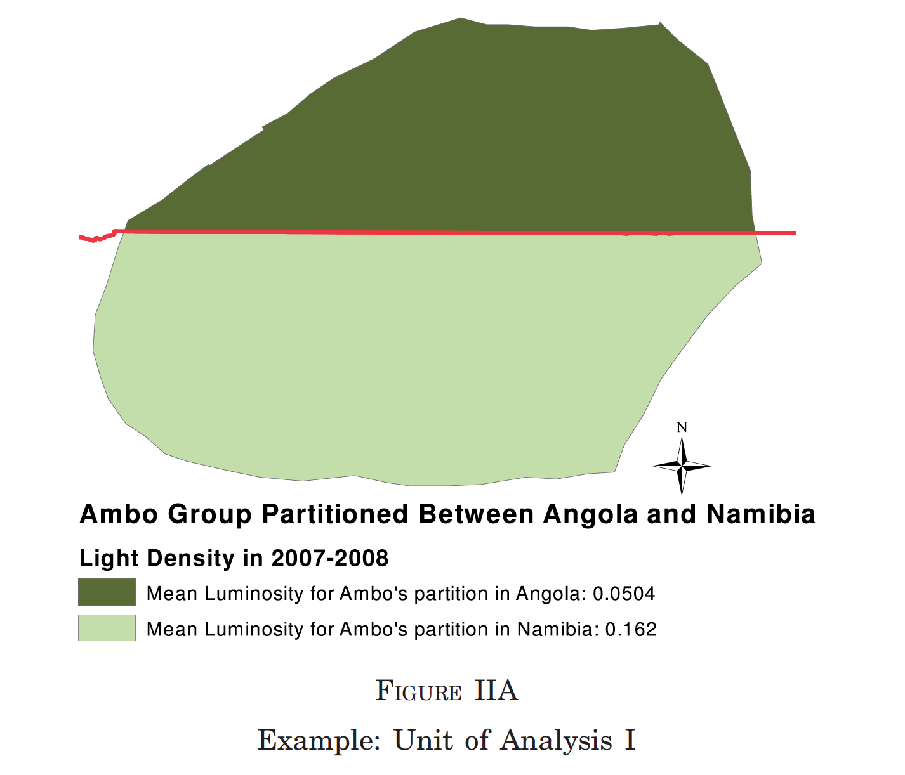

<!doctype html>
<html lang="en">

<head>
	<meta charset="utf-8">

	<!-- Titles and author for Metadata -->
	<title>Economic Growth and Development -  Lecture 9</title>
	<meta name="description" content="Growth&Development">
	<meta name="author" content="Juan Carlos Muñoz-Mora">

	<!-- Options for screen -->
	<meta name="apple-mobile-web-app-capable" content="yes" />
	<meta name="apple-mobile-web-app-status-bar-style" content="black-translucent" />
	<meta name="viewport" content="width=device-width, initial-scale=1.0, maximum-scale=1.0, user-scalable=no, minimal-ui">

	<!-- Templates -->
	<link rel="stylesheet" href="reveal.js/css/reveal.css">
	<link rel="stylesheet" href="reveal.js/css/theme/white.css" id="theme">
	<link rel="stylesheet" href="reveal.js-own-style/print.css"  type="text/css" media="print">

	<!-- Code syntax highlighting -->
	<link rel="stylesheet" href="reveal.js/lib/css/zenburn.css">
	<!--[if lt IE 9]>
	<script src="reveal.js/lib/js/html5shiv.js"></script>
	<![endif]-->
	<script async defer src="https://buttons.github.io/buttons.js"></script>
	</head>

	<!-- ...  ...  ...  ... ... ... ... ... .. .. ..-->
	<!-- ...  ...  ...  ... ... ... ... ... .. .. ..-->
	<!-- 				Content 					-->
	<!-- ...  ...  ...  ... ... ... ... ... .. .. ..-->
	<!-- ...  ...  ...  ... ... ... ... ... .. .. ..-->

	<body>
		<div class="reveal">
			<div class="slides">
			<!-- START SLIDES -->
			<!-- ...  ...  ...  ... ... ... ... ... .. .. ..-->
			<!-- 				Slide 1	 -- Title			-->
			<!-- ...  ...  ...  ... ... ... ... ... .. .. ..-->

<!-- Section 1: General Introduction  -->
<section data-markdown  data-separator="^\n===\n" data-separator-vertical="^\n---\n" >
<script type="text/template">

# Fundamental of Growths
<br>

Juan Carlos Munoz-Mora

<br>
Universidad EAFIT
<br>
2020

===

# Luck and Multiple Equilibria

---

<!-- .element  width="70%" -->

---

<!-- .element  width="70%" -->

---

Yet, where this luck might come from

---

## DO LEADERS MATTER? NATIONAL LEADERSHIP AND GROWTH SINCE WORLD WAR II

BENJAMIN F. JONES AND BENJAMIN A. OLKEN

---

<!-- .element  width="70%" -->


---

<!-- .element  width="70%" -->


---

<!-- .element  width="70%" -->


---

<!-- .element  width="70%" -->

---

<!-- .element  width="70%" -->


---

<!-- .element  width="70%" -->

---

# Some caveats of this theory

---

- luck and multiple equilibria are useful for our study of the mechanics of economic development, but they are unlikely to provide us with the fundamental causes of why world economic growth started 200 years ago and why some countries are rich while others are poor today.

===

# Geography and Growth

---

## Geography and Economic Development
John Luke Gallup and Jeffrey D. Sachs, with Andrew Mellinger

March 1999

---

We find that location and climate have large effects on income levels and income growth, through their effects on transport costs, disease burdens, and agricultural
productivity, among other channels. Furthermore, geography seems to be a factor in the choice of economic policy
itself.

---

<!-- .element  width="70%" -->

---

<!-- .element  width="70%" -->


---

<!-- .element  width="70%" -->


---

<!-- .element  width="70%" -->


---

## What are the main mechanisms?

---

<!-- .element  width="70%" -->


---

<!-- .element width="70%" -->

---

<!-- .element  width="70%" -->

---

<!-- .element width="70%" -->

---

<!-- .element  width="70%" -->

---

<!-- .element width="70%" -->


---

# Some caveats of this theory

---

- Most of the technological differences emphasized by these authors refer
to agriculture.
- What about industrialization?
- Poverty and Diseases
-

===


# Culture

---

- Religion
- Values
- Cooperation

---

## CULTURE, INSTITUTIONS AND THE WEALTH OF NATIONS
Yuriy Gorodnichenko Gerard Roland

---

They argue that a more individualist culture leads to more innovation
and to higher growth because of the social status rewards associated with innovation in that culture.

---

<!-- .element width="70%" -->

---

<!-- .element width="70%" -->

---

<!-- .element width="70%" -->

---

<!-- .element width="70%" -->

---

<!-- .element width="70%" -->

---

<!-- .element width="70%" -->

---

## RELIGION AND ECONOMIC GROWTH

Robert J. Barro
Rachel M. McCleary

---

<!-- .element width="70%" -->

---

<!-- .element width="70%" -->

---

<!-- .element width="70%" -->

---

<!-- .element width="70%" -->


---

<!-- .element width="70%" -->

---

Any conclusion?

===

# Institutions

---

Institutions are the rules of the game in a society or, more formally, are the humanly
devised constraints that shape human interaction.

North (1990, p. 3)

---

- they are humanly devised; that is, in contrast to geography, which is outside human control, institutions refer to man-made factors.
- institutions place constraints on individual behavior
- The constraints placed on individuals by institutions shape human <interactio></interactio>n and affect incentives.

---

<!-- .element width="70%" -->

---

# THE COLONIAL ORIGINS OF COMPARATIVE DEVELOPMENT: AN EMPIRICAL INVESTIGATION”

DARON ACEMOGLU, SIMON JOHNSON AND JAMES ROBINSON

---

- Settler mortality affected colonialization strategy, which affected institutions.
- These institutional differences have persisted.
- In a sample of former colonies, regress income per capital today on institutions today, instrumenting with settler mortality.
- “This identification strategy will be valid as long as … mortality rates of settlers between the seventeenth and nineteenth centuries have no effect on income today other than through their influence on institutional development” (AJR, p. 1383).

---

- Mortality influenced settlement patterns.
- Colonizers adopted very different strategies in different places: “settler colonies” vs. “extractive states.”

---

<!-- .element width="70%" -->


---

<!-- .element width="70%" -->

---

<!-- .element width="70%" -->

---

<!-- .element width="70%" -->

---

<!-- .element width="70%" -->

---

<!-- .element width="70%" -->

---

<!-- .element width="70%" -->

---

#[National Institutions and Subnational Development in Africa](http://qje.oxfordjournals.org/content/129/1/151.full)

Michalopoulos and Papaioannow. The Quarterly Journal of Economics (2014) 129 (1): 151-213.

---

## Paper

They investigate the role of national institutions on subnational African
development in a novel framework that accounts for both local geography and
cultural-genetic traits.

- political boundaries $\rightarrow$ partitioned more than 200 ethnic groups

### Method

- Matching type
- Spatial Regression Discontinuity approach (pixel level)

---

### Berlin Conference: Partitioned Africa Among Colonizers


---

  

---

  

---

## Defining partitioned

- At least 10% of the historical homeland belongs to more than one contemporary
state.
- They drop partitioned areas of less than 100 square kilometers as tiny partitions are most likely due to the lack of precision and projection error.

---


---


Similar at pixel level

$IQLc$ denotes institutional quality of country c (World Bank's Governance Indicators)

---


$\uparrow$ higher institutional $\rightarrow$ $\uparrow$ higher levels of development

---

- Regression Discontinuity Design (RD-polynomials of the distance from
the centroid of each pixel) - Discussed on Thursday
-  Other analysis - Robustness Check


===

NEXT LECTURE

---

Country Debate

---

Alternative  and Introduction to Romer


</script>
</section>

<!-- END SLIDES -->
		</div>
	</div>

<!-- ...  ...  ...  ... ... ... ... ... .. .. ..-->
<!-- ...  ...  ...  ... ... ... ... ... .. .. ..-->
<!-- 				Scripts Options				-->
<!-- ...  ...  ...  ... ... ... ... ... .. .. ..-->
<!-- ...  ...  ...  ... ... ... ... ... .. .. ..-->


	<!-- Basic Scripts Set Up -->
	<script src="reveal.js/lib/js/head.min.js"></script>
	<script src="reveal.js/js/reveal.js"></script>

	<!-- Basic Scripts Set Up -->
	<script>
			// Full list of configuration options available here:
			// https://github.com/hakimel/reveal.js#configuration
			Reveal.initialize({
				// Display controls in the bottom right corner
				controls: true,
				// Display a presentation progress bar
				progress: true,
				// Push each slide change to the browser history
				history: true,
				center: true,
				mouseWheel: true,
				theme: Reveal.getQueryHash().theme, // available themes are in /css/theme
				transition: Reveal.getQueryHash().transition || 'default', // none/fade/slide/convex/concave/zoom
			    //  Add annotation into the board
			    chalkboard: { // font-awesome.min.css must be available
					src: "chalkboard/chalkboard.json",
					toggleChalkboardButton: { left: "80px" },
					toggleNotesButton: { left: "130px" },
    			},
    			// Latex
                 math: {
					 // mathjax: 'https://cdnjs.cloudflare.com/ajax/libs/mathjax/2.7.0/MathJax.js',
					config: 'TeX-AMS_HTML-full',
					TeX: {
						Macros: {
							R: '\\mathbb{R}',
							set: [ '\\left\\{#1 \\; ; \\; #2\\right\\}', 2 ]
						}
					}
				},
                //math: {
					// Elements to ignore for math rendering (defaults shown):
					// ignoredElements: [ 'pre', 'code' ]
					// Set `enableGlobally` to `false` to avoid excessive
					// escaping. You will then need to activate `$…$`-style
					// replacements per slide with a `data-math` attribute
					// (formulas wrapped in elements are still activated
					// everywhere).
					//
					//enableGlobally: false,
					// Required for this example only, ignore --->
					//katexScript:     'math-katex/lib/katex-0.7.1/katex.min.js',
					//katexStylesheet: 'math-katex/lib/katex-0.7.1/katex.min.css'
					// <---
				//},
				menu: { // Menu works best with font-awesome installed: sudo apt-get install fonts-font-awesome
					themes: false,
					transitions: false,
					markers: true,
					hideMissingTitles: true,
					custom: [
				            { title: 'Plugins', icon: '<i class="fa fa-external-link"></i>', src: 'toc.html' },
				            { title: 'About', icon: '<i class="fa fa-info"></i>', src: 'about.html' }
				        ]
				},
				theme: Reveal.getQueryHash().theme, // available themes are in /css/theme
				transition: Reveal.getQueryHash().transition || 'default', // none/fade/slide/convex/concave/zoom

				// Optional libraries used to extend on reveal.js
				dependencies: [
					{ src: 'reveal.js/lib/js/classList.js', condition: function() { return !document.body.classList; } },
					// For Markdown Codes
					{ src: 'reveal.js/plugin/markdown/marked.js', condition: function() { return !!document.querySelector( '[data-markdown]' ); } },
					{ src: 'reveal.js/plugin/markdown/markdown.js', condition: function() { return !!document.querySelector( '[data-markdown]' ); } },
					// MAth - LAtex
                    //{ src: 'reveal.js/plugin/math-katex/math-katex.js', async: true }
                    { src: 'reveal.js/plugin/math/math.js', async: true },
					{ src: 'reveal.js/plugin/highlight/highlight.js', async: true, callback: function() { hljs.initHighlightingOnLoad(); } },
					{ src: 'reveal.js/plugin/zoom-js/zoom.js', async: true, condition: function() { return !!document.body.classList; } },
					{ src: 'reveal.js-plugins/menu/menu.js' },
					{ src: 'reveal.js-plugins/chalkboard/chalkboard.js' },
				],
				keyboard: {
			        67: function() { RevealChalkboard.toggleNotesCanvas() },    // toggle notes canvas when 'c' is pressed
			        66: function() { RevealChalkboard.toggleChalkboard() }, // toggle chalkboard when 'b' is pressed
			        46: function() { RevealChalkboard.clear() },    // clear chalkboard when 'DEL' is pressed
			         8: function() { RevealChalkboard.reset() },    // reset chalkboard data on current slide when 'BACKSPACE' is pressed
			        68: function() { RevealChalkboard.download() }, // downlad recorded chalkboard drawing when 'd' is pressed

    			},

			});
	</script>

</body>
</html>
